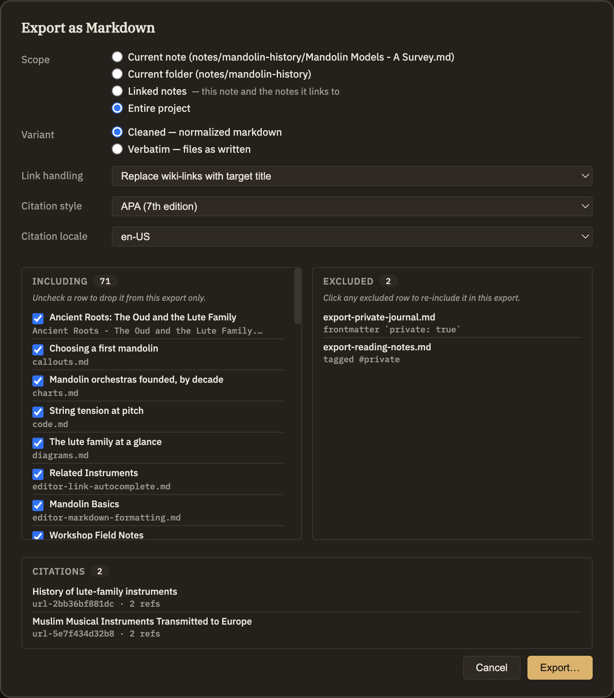

Scopes & privacy
Whenever you export, two things get settled first: how much of your work to include, and what to hold back even if it would otherwise be swept in. Every export shows you a preview so you can see exactly what you'll get before you commit.
How much to export
Every export lets you choose how wide to cast the net:
Keeping private notes out
Your knowledge base holds personal thinking, half-formed ideas, and reading notes you never meant to share. So exports leave private notes out by default unless you choose otherwise. A note is treated as private if any of these are true:
#private tag.Nothing is dropped silently — each left-out note comes with a plain reason so you can see why it was held back.
Reviewing before you export
The preview shows two lists: what's included and what's left out, each with its reason. You can adjust either one, just for this export:
